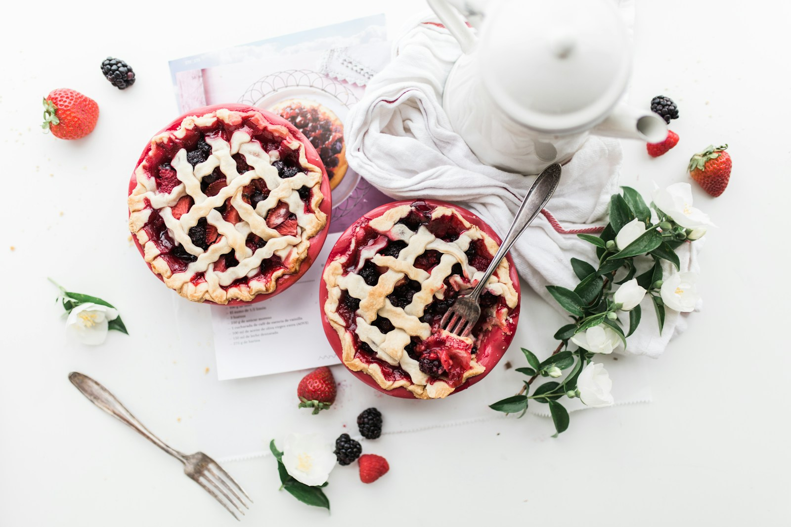
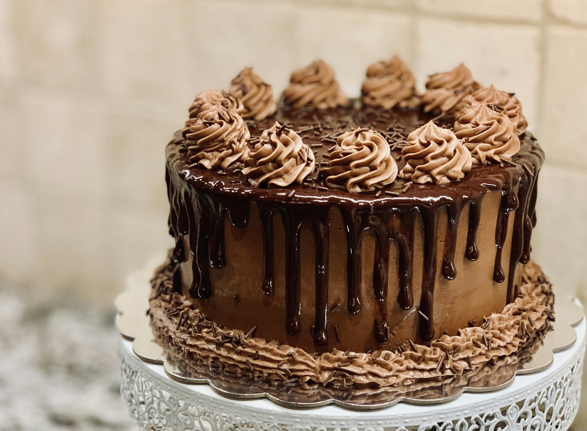
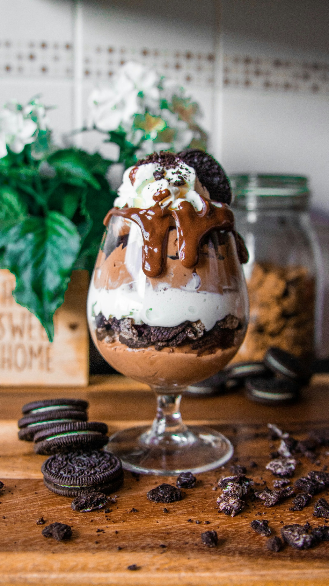
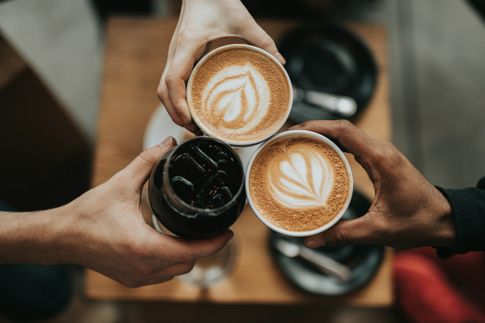

Sütemények & torták
Valami édeset a hétköznapokra, vagy tortát egy különleges alkalomra? A választékról és a lehetőségekről kérdezzen minket.
ÉrdeklődömEGY KIS SZÜNET, EGY JÓ SÜTEMÉNY.
Sütemény. Torta. Fagylalt. Kávé.
Édes pillanatok, két esztergomi címen.

A MINDENNAPOKBA IS FÉR EGY KIS ÜNNEP.
Egy találkozó mellé. Egy ünnepi asztalra. Vagy csak úgy, mert megkívánt valami édeset. Ismerje meg a Kovács Cukrászda kínálatának világát.
AZ APRÓ ÖRÖMÖKNEK IS JÁR EGY PILLANAT.
Tovább a finomságokhoz ↓AMIKÉRT ÉRDEMES MEGÁLLNI.
A fotók inspirációként szolgálnak.
Az aktuális kínálatról érdeklődjön nálunk.

Valami édeset a hétköznapokra, vagy tortát egy különleges alkalomra? A választékról és a lehetőségekről kérdezzen minket.
Érdeklődöm
Egy hűsítő megálló az édes pillanatok között. Az elérhető ízekről és a fagylaltkínálatról kérjük, érdeklődjön.
Rákérdezek az ízekre
Prémium kávé, italok és üdítők is szerepelnek a kínálatban. Egy sütemény mellé, vagy egy önálló kis szünethez.
Megnézem, hol találomKÉT CÍM. EGY ÉDES TALÁLKOZÁS.
2500 Esztergom
ÚtvonaltervezésEsztergom-Kertváros
ÚtvonaltervezésA nyitvatartásról és az üzletenkénti kínálatról kérjük, tájékozódjon telefonon.
KÉRDEZZEN BÁTRAN.
Torta, sütemény vagy egy kérdés a kínálatról?
Keressen minket közvetlenül.